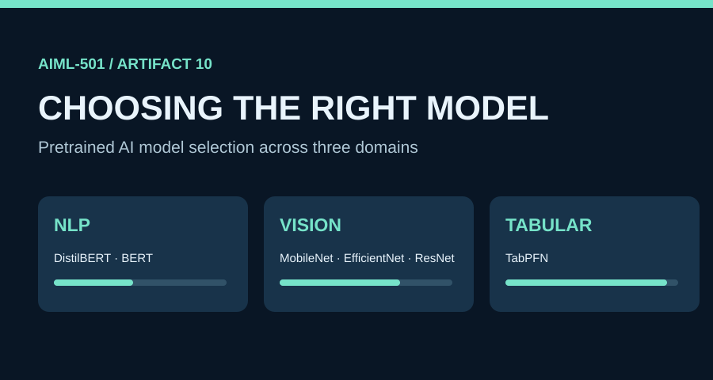

ARTIFACT 10 · VISUAL DECISION MATRIX
Choosing the Right Model
Pretrained NLP, vision and tabular models: an evidence-based decision framework for performance, computational cost and explainability.

View the artifact
If it does not display, open the PDF directly.
Research question
How should teams choose pretrained models across tasks without confusing benchmark quality, theoretical compute and actual deployment speed?
Method and classification
Compares six candidates by input domain, checkpoint size, task-specific benchmark, compute evidence and explainability. Published results are labeled; no model runs are claimed.
Professional value
Shows evidence-led technology evaluation, model trade-off analysis and practical recommendations for operational decision-making.